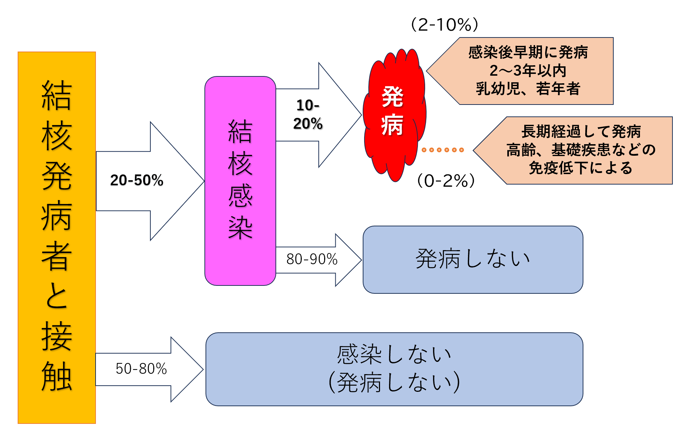

Ⅴ. 疾患別感染対策 2. 結核 （Tuberculosis）
- 臨床
- 疫学
- 日本全体で新規結核登録者数は年々減少傾向にあるが、本邦は欧米諸国に比して今なお結核発病者が多い。令和５年時点では年間１万人以上の新規登録があり、同年の結核罹患率は人口10万人対8.1である。
- 特に近畿圏の結核罹患率は全国平均に比しても高く、当院は国内でも結核症例が相対的に多い地域で診療をおこなっていることを認識する。
- 結核菌の感染経路
- 感染経路は空気感染(飛沫核感染)による。
- 感染源となりうる結核症
- 感染源となりうるのは、結核症の8割以上を占める肺結核症のほかに、湿性分泌物を多く排出しうる気管支結核症、咽喉頭結核症がある。
- 特に気管支結核症や咽喉頭結核症は、その病変部位から肺結核症のような典型的な画像所見を欠く場合があること、咳嗽や喀痰ではなく咽頭痛や喘鳴が受診契機となる場合があることから見落とされやすい、あるいは診断が遅れやすい病態である。さらに、これらの結核症は肺結核症と同様に排菌量が多い、すなわち感染性が強い症例を多く含むため注意を要する。
- 結核感染の経過
- 結核発病者と接触した際のおおよその感染の割合、発病の割合を以下に示す。

高齢者施設・介護職員対象の結核ハンドブック(2016年７月)より引用、一部修正
- 結核発病者と接触すると一定の確率で感染が成立しうるため、結核の感染対策は重要であると認識する。
- 結核に感染した者も全例が発病に至ることはないが、発病を防止する最も効率的な手段は感染を防止することである。感染を防ぐことで発病を防ぎ、さらなる感染拡大を防止することにつながると認識する。
- 結核菌に対するワクチンがない点でも感染対策による予防が重要である。
- 初感染からの発病
- 気管内に結核菌を吸入し感染が成立してから早期に発病する場合の潜伏期間は数週～長くて3年程度とされる。
- 初感染発病症例に日常診療で遭遇する機会は稀であるが、特にBCG未接種の乳幼児は、感染後早期の発病にとどまらず結核性髄膜炎や粟粒結核といった重症結核症での発病、場合により生命予後に関わることがあるため注意する。
- 再活性化による発病
- 初感染の際に免疫が成立し、宿主の免疫により早期の発病が起こらなかった症例では、休眠状態の結核菌がリンパ節や肺内に残存する。宿主の免疫が保たれている間は発病しないが、時間が経過（数年～数十年）すると、加齢に伴う免疫力の低下、下記に示すようなリスク因子の増加が結核菌に対する免疫を低下させ、発病に至る。
- 一方、若年の外国出生者の発病の場合は、本国で時期不明の感染が成立してから日本への入国後に発病することがあり注意を要する。
- 結核発病のリスク因子、近年の傾向
- 発病のリスク因子として知られる病態は、HIV陽性、糖尿病、関節リウマチ、血液透析、胃切除後、低栄養、高齢、喫煙、アルコール過剰摂取、薬物乱用、抗がん剤使用、免疫抑制剤使用などである。これら背景のある患者で結核症を疑う胸部画像の異常所見や呼吸器症状をはじめとした慢性症状を認める際には、結核症を鑑別に挙げて検査をおこなう必要がある。
- 近年は、若年者の結核で外国出生患者の占める割合が増加している。若年者といえども、外国出生者では結核を疑う閾値を低くもつことが重要である。
- 院内感染対策
- 感染対策の原則
- 感染対策の分類としては、空気感染対策をおこなう。
- 結核菌は空気感染を起こす麻疹や水痘・帯状疱疹ウイルスに比して感染力が強くないため、適切な対策をおこなえば感染拡大の防止は十分に可能である。
- 要点は、適切な標準予防策をおこなったうえで、感染源からの排菌量の減少をはかること、感染源の時間的・空間的な隔離により空気を介した感染のリスクを低下させること、医療者はN95マスクを用いて飛沫核の吸入を抑えることである。これらを最大限に組み合わせることが感染対策の原則となる。
- 入院患者の対応
- 肺結核症や気管支結核症、咽喉頭結核症を疑った場合、速やかに個室隔離する。
- 隔離継続の判断をおこなうため、３回連続での喀痰抗酸菌塗抹検査(3連痰)を速やかに実施する。場合により胃液採取を考慮する。
- 検査の間隔は隔離可能な時間、患者の病状などを踏まえて総合的に判断されるが、多くの場合８～２４時間の間隔で実施される。実施例を以下に示す。
(検体採取の例)
- 喀痰1回目→(8時間)→喀痰2回目(早朝採取)→(8時間)→喀痰3回目
- 喀痰1回目→(8時間)→空腹時胃液(早朝採取)→(8時間)→喀痰2回目
- 隔離解除の条件は3回の喀痰または胃液の抗酸菌塗抹陰性の確認を原則とするが、最終的な判断は感染制御部と相談する。
- 特に、曝露歴や胸部に空洞を認めるなど肺結核症を強く疑う症例では、診断を目的とした胃液検査や気管支鏡検査の結果が出るまで感染対策続行を個別に考慮する必要があることに留意する。
- 肺結核症疑い患者もしくは結核菌の排菌が確認された患者病室に入室するスタッフはN95マスクを着用する。
- 患者病室へのスタッフの出入りは必要最低限とするが、必要な患者状態観察・診察・検査を妨げるものではない。
- 検査のため患者が出室する時は必ず患者にサージカルマスクを着用させる。また、移動や検査の時間が必要最小限となるように、当該部署と検査時間について事前に相談しておく。
- 検査結果が判明するまで、隔離中の面会は原則不可とする。特別の事情がある場合は、感染制御部と相談とする。
- 外来患者の対応
- 掲示で結核症疑いの患者や有症状者の自己申告を促す。
- 結核症疑いの外来患者の喀痰は、自宅で喀出した喀痰の持参を指示するか、採痰ブースを使用しての採取を考慮する。
- 肺結核症疑いの患者が外来を受診する場合、または外来患者で精査の結果肺結核症が疑われた場合、または外来で実施した喀痰抗酸菌塗抹検査が陽性となった場合には、外来での感染対策に関して感染制御部へ相談する。
- 肺結核症が疑われる患者の手術、術中に肺結核症が疑われた場合の対応（例えば、術中迅速病理検査で結核症が疑われた場合など）
- 速やかに感染制御部へ相談し、当該患者の手術室に入るスタッフは、N95マスクを着用する。
- 検体採取の注意点
- 喀痰
- 肺結核症や気管支結核症、咽喉頭結核症を疑う場合、原則として3連痰を実施する。３回のうち少なくとも１回は早朝に採取した痰を含める（入院診療、外来診療いずれにおいても同様）。
- 胃液
- 痰の喀出が困難な患者、例えば小児・高齢者などは、喀痰の代わりに早朝空腹時の胃液採取で代用することが可能である。
- 胃液採取は、胃管挿入の操作により咳嗽を誘発することが多い手技であることに注意する。スタッフや他の患者への曝露リスクは喀痰採取よりも大きなものとなるため、N95マスク装着、個室のドアの閉鎖を徹底する。
- 手技・処置など
- 気管挿管や気管支内視鏡は、手技により呼吸器症状の誘発や排出される気道分泌物の増加が見込まれる。肺結核や気管支結核症、咽喉頭結核症を疑う患者に対して同手技をおこなう場合には、N95マスクを使用する。
- インターフェロンγ遊離試験（IGRA: Interferon-Gamma Release Assay）
- 全血検体を用いて結核菌の抗原に対するリンパ球の反応をとらえて、結核菌の感染の有無を評価する検査である。
- 結核症診断の際に補助的に用いられることがあるが、IGRAが陽性であっても結核症の発病の根拠とならない場合や、陰性であっても感染が否定できない場合があるため、結果の解釈に注意する。
- 結核症を診断した際の対応
- 喀痰抗酸菌塗抹陽性の結核症例
- 発生届を感染制御部へ速やかに提出する。
- 感染症法に従い、原則として感染症指定医療機関へ入院調整をおこなう。
- 入院患者の場合は、転院までは個室隔離で感染対策を継続する。
- やむを得ない理由により当院での入院診療を継続する場合は、治療方針をふくめ感染制御部・感染症内科と保健所へ相談する。
- 感染症法に基づき対応する点、保健所へ届け出が必要な点、保健所から本人もしくは家族に状況確認の連絡が入る点について患者や家族へ説明をおこなう。
- 接触者検診については、保健所の判断・指示に従う。
- 喀痰抗酸菌塗抹陰性の結核症例 あるいは 肺外結核症例
- 発生届を感染制御部へ速やかに提出する。当院で結核を治療する場合は、公費負担申請書を感染制御部へ提出する。
- 喀痰抗酸菌塗抹陰性であれば当院での治療継続が可能だが、病室や外来の診察場所については感染制御部と相談する。
- 感染症法に基づき対応する点、保健所へ届け出が必要な点、保健所から本人もしくは家族に状況確認の連絡が入る点について患者や家族へ説明をおこなう。
- 接触者検診については、保健所の判断・指示に従う。
- 潜在性結核感染症（LTBI: latent tuberculosis infection）
- 発生届を感染制御部へ速やかに提出する。
- LTBIは発病していないため感染性はなく、空気感染対策は不要である。
- 感染症法に基づき対応する点、保健所へ届け出が必要な点、保健所から本人もしくは家族に状況確認の連絡が入る点について患者や家族へ説明をおこなう。
- 接触者検診
- 結核の接触者検診の実際
- 結核症の届出がなされた際には、管轄保健所と連携して接触者検診をおこなう。
- 検査対象者、検査項目、検査実施時期は保健所の指導にもとづき決定される。この際に当該部署ごとに接触者リストの作成を求められるため、リストを早急に作成して感染制御部へ提出する。
- 疫学の項に記載したとおり、結核は感染から発病まで長時間(少なくとも数週間)を要する感染症である。このため、接触者検診に緊急性はなく、排菌や曝露の程度を確認して検診内容を吟味されるのが通常である。患者・家族・医療者とも過度に不安にならないよう配慮し、保健所の判断を待つよう説明する。
- なお、例外的に至急の検診が検討される患者群は、発病した場合に重症結核症となることが多い乳幼児、長期間の同室やマスクを着用していないことが判明しており明らかに曝露の程度が大きいと予想される者などである。
- 接触者検診で結核症を発病していると診断された者に関しては、結核症としての届出および治療をおこなう。発病はしていないもののLTBIと診断された者に関しては、個々の症例に関してLTBIとしての治療を考慮する。治療に関しては感染症内科へのコンサルトが可能である。
- 連絡先
- 平日の時間内(８時３０分～１７時１５分)：感染制御部 内線５０９３
- 上記以外の夜間・休日：感染症内科オンコール